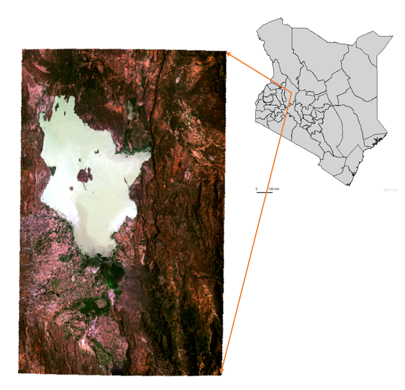
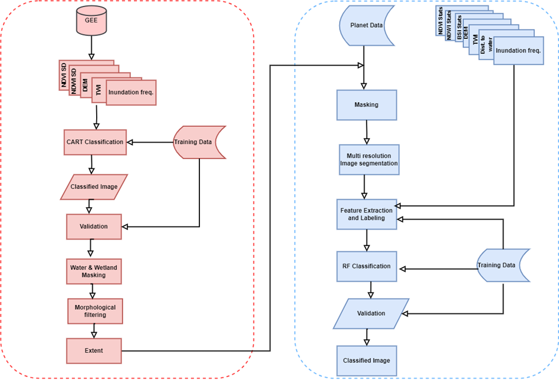
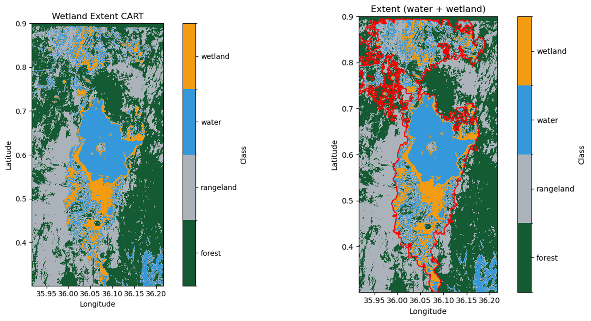
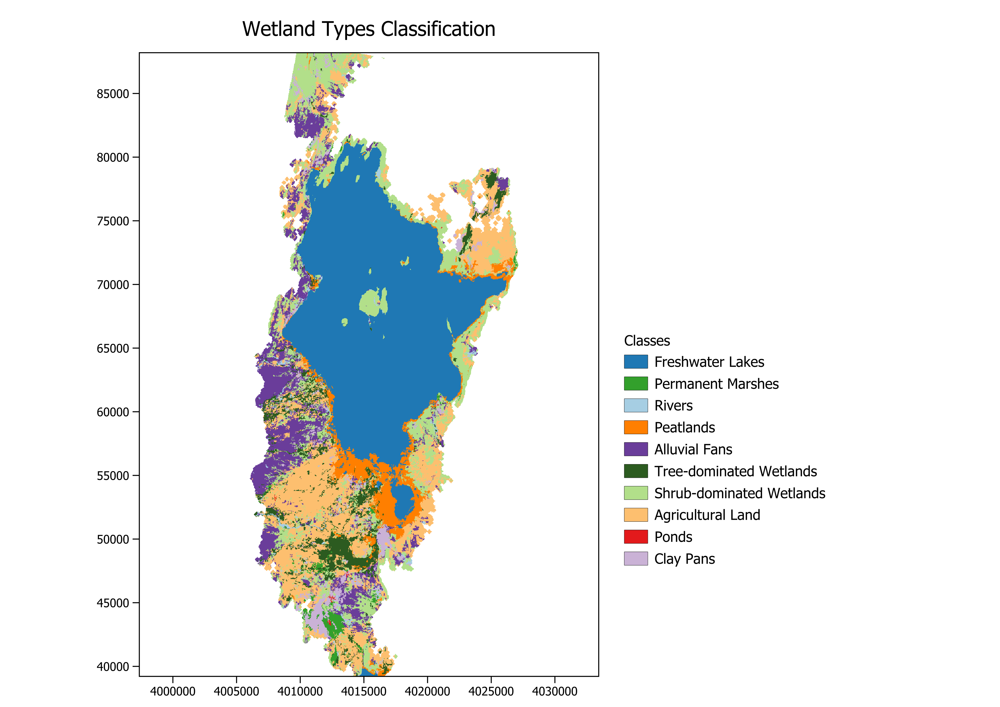

Remote Sensing Intern
Overview
During my two-month internship, 1st July to 29th August 2025, at the Center for Remote Sensing of Land Surfaces (ZFL) at the University of Bonn, I contributed to the WetlandHealth4UNgoals project. The project aims to develop Earth Observation (EO)-based information products to monitor vegetation vitality and wetland conditions, using endorheic wetlands in Kenya’s Rift Valley as an example.
My main responsibilities included delineating wetland extents and classifying wetland types, providing a basis for the ongoing ecological monitoring.
Study Area
Lake Baringo is an endorheic freshwater lake in Kenya’s Rift Valley, surrounded by diverse wetland habitats. These wetlands are vital for biodiversity, water purification, and local livelihoods, including agriculture and fishing. Accurate monitoring of wetland conditions is crucial for ecological management and informed policy-making.

Tasks and Outcomes
The workflow below summarizes the sequence of tasks I undertook during the internship to delineate and classify wetlands at Lake Baringo.

Wetland Extent Delineation
The main aim of this first task was to accurately delineate the wetland extent within the study area.
Activities:
This task involved a series of subtasks including data acquisition, data processing, model training and validation, classification, and extent delineation as shown in figure 1.
EO datasets from multiple sources such as Google Earth Engine (GEE) and Copernicus Data Space Ecosystem (CDSE) were downloaded. These datasets included vegetation indices such as NDVI and NDWI derived from GEE, hydrological indices including the Topographic Wetness Index (TWI), digital elevation data, and inundation frequency derived from SAR scenes obtained from CDSE. For the inundation frequency, water was masked using thresholding, and the number of days each pixel was inundated over the study year was calculated, providing an indicator for identifying persistently wet areas.
The datasets were then pre-processed to prepare for classification. A Classification and Regression Trees (CART) model was applied. The model was trained and validated using data previously collected field data covering land cover classes including Rangeland, Forest, Water, and wetland. To delineate wetland areas, the water and wetland classes were masked and a morphological filtering applied. This operation removed noise, filled small holes, and refine the shape and boundary of the wetland areas resulting in a clear extent for subsequent analysis.
Result:
The wetland extent map for each year of the study period 2018 to 2024. The figure below shows an example of the classification and extent for the year 2024.

Wetland Type Classification
The aim of this task was to classify the wetland types within the study area using high resolution satellite imagery.
Activities:
This task involved several subtasks including data acquisition, data processing, wetland classes crosswalk, model training and validation, and classification as shown in figure 1.
EO data from multiple datasets were acquired or derived from various sources such GEE and Planet. This additional data included: Vegetation and water indices (NDVI stats, NDWI stats, BSI stats), Relative DEM, Inundation frequency, Hydrological data (TWI, Distance to nearest water bodies), High resolution imagery (Planet 8 spectral band imagery).
A crosswalk between IUCN (International Union for Conservation of Nature) and Ramsar Convention wetland types was done for inland wetlands to determine the correct wetland types for the area of study given prior field visits. This informed the creation of the training samples from the high-resolution imagery. The wetland classes defined for the study included: Permanent lakes, Permanent and Seasonal rivers, Permanent Marshes, Seasonal floodplains, Peatlands, Tree-dominated wetlands, Shrub-dominated wetlands, Agricultural areas, and Ponds. The Seasonal floodplains were further classified into 2: clay pans and alluvial fans.
The planet imagery was then masked using the wetland extent derived in Task 1. Multi-resolution Segmentation was applied to the masked imagery and the resulting segments exported for further analysis. Features were extracted for each segment and then labelled each segment with the corresponding wetland class using the training samples created. A Random Forest (RF) model was then applied to train and validate the classification.

The area (in hectares) covered by each class in 2024 was:
Permanent Lakes = 22,889.14 ; Permanent Marshes = 614.73; Rivers = 517.56; Peatlands = 2,763.60; Alluvial Fans = 5,652.97; Shrub-dominated Wetlands = 8,344.23; Tree-dominated Wetlands = 2,788.25; Agricultural Land = 10,909.74; Ponds = 31.19; Clay Pan = 1,619.29
Documentation
The analysis code and results are fully documented and version controlled in GitHub here: https://github.com/ZFL-Uni-Bonn/Wetland_Delienation_Classification
Conclusion
During my two-month internship at ZFL, I had the opportunity to contribute to an ongoing project. The internship allowed me to apply and further develop skills I had acquired over the past year, including Object-Based Image Analysis (OBIA) and applying classification algorithms, as well as programming in Python. My supervisors provided valuable guidance and regular feedback, which supported my learning and timely task completion.
Additionally, I gained experience in working with remote servers and virtual machines to process high-resolution imagery which was essential especially when handling large Earth observation datasets. I was also introduced to other remote sensing approaches, such as simulations using DART and 3D radiative transfer models, which, although not directly applied in my tasks, provided insight into the different technologies available in remote sensing.
Some challenges arose in my assigned tasks during the internship. Integrating multiple datasets from various sources required significant pre-processing, and the computational load of processing high-resolution imagery was higher. The classification relied on initial field data, which was limited which highlighted the need for a more robust training data for increase in accuracy in the classification. Despite these limitations, the outcomes of my tasks provided an important foundation for subsequent monitoring and analysis.